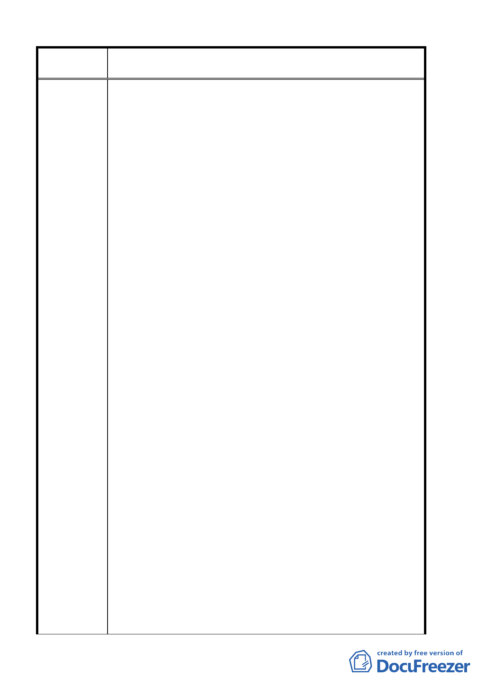

案 名 臺北市北投區都市計畫通盤檢討案（主要計畫）案
僅以學園路為主要之進出通道銜接至中央北路四段，除自行
開車者利用學園路進出本校外，搭乘捷運者係由本校派遣車
輛由捷運關渡站行經學園路進行接駁，行人亦係由中央北路
四段上行學園路進入本校。惟經查，距本校最近之捷運站應
為忠義站，其與本校之直線距離約僅三、四百公尺，而該站
對面之中央北路四段三一六巷係屬都市計劃之計畫巷道，該
巷道之一段轉彎處距本校校地界址僅約二十餘公尺，是以本
校以為，倘能修改該巷道之路型，使之能與本校校地相連
接，則將可藉以使本校與中央北路及捷運忠義站取得直接之
聯絡，對於未來有進出本校需要者，當可於捷運忠義站下車
後利用該巷道，取得另一進出本校之步行捷徑，如此應可增
加捷運之利用，並可減輕學園路暨其附近道路之負荷。位於
本校北側之一德街末段都市計畫道路，由於開闢時程延遲，
影響本校校地之規劃與開發甚鉅，本校多年前曾向 貴府提
出將該都市計畫道路調整至當時供通行現有道路之建議，惟
經 貴府主管單位評估後，以 貴府養工處業編列預算開闢
為由，覆以維持原案之意見而未予採納，其處理情形並已納
入本次通盤檢討細部計劃相關說明內（附件-2 頁）。該計畫
道路嗣後確實業於九十一年間開闢完成，惟基於本校訴求之
一貫原則，現有道路應於都市計畫道路開闢完成後逕行廢
止，以符都市計劃之規劃意旨，並免影響本校校地之規劃開
發及浪費公產資源。
三、由於本校位置並未鄰接該區域之主要道路中央北路，而係
僅以學園路為主要的進出通道，銜接中央北路四段。除自行
開車者利用學園路進出本校外，搭乘捷運者，係由本校派遣
車輛由捷運關渡站行經學園路進行，接駁行人亦係由中央北
路四段上行學園路進入本校。惟經查距本校最近的捷運站為
忠義站，其與本校之直線距離約三四百公尺，而該站對面的
中央北路四段 316 巷，係屬都市計畫計畫巷道，該巷道之一
段轉彎處距本校之校地界址約二十餘公尺，是以本校認為倘
能修改該巷道之路型，使之能與本校校地連接，則可以使本
校校地直接連接，對於未來進出本校需要者，當可於捷運站
下車後利用該巷道作為進出本校之捷徑，如此可增加捷運之
運用，並可減輕學園路暨附近道路之負荷。
第 12 頁，共 49 頁